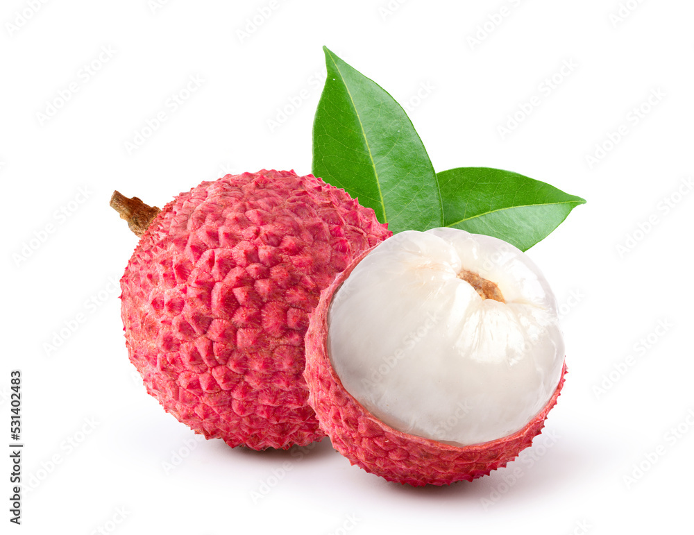

King of Sweets
Throughout my childhood I would hear stories about my grandmother, an avid plant lover with a home surrounded with carefully tended flowers, bushes, and trees. Her most prized plant was the lychee tree in her backyard. It has been there ever since she was a child, and bore her favorite fruit. Hearing these stories filled me with dreams of visiting her and her treasured garden, but unfortunately she lives in Sinaloa, Mexico.
When I was four years old, my uncle took a trip to Mexico and brought back a brown box filled to the brim with lychees from my grandmother's tree. My sisters and I gathered around the kitchen table snacking on the sweet little pearls as our parents reminisced with my uncle about their home country and childhood. I remember easily ripping open the spiky red skin of the lychee, and the squishy white ball almost slipping out of my hands. The sweet floral aroma filled the air as juice began to seep out of the little ball. I excitedly plopped it into my mouth. It burst open, sending a wave of sugary sweetness swirling through my mouth. It was like a flower was soaked in sugarcane and jellied into a delicious little pouch. The smooth seed at the center was easily discarded, and I dove right back into the box for another lychee. The freshness of those lychees was remarkable, especially considering the long journey to our home.
The lychee tree originated in the Yunnan province of southwest China about 200 BC. Writings from then described lychees to be the king of fruits for many reasons. One reason is that lychee trees can last for thousands of years. A possibly 1,000 year old tree stands today in Guangzhou, and is said to still bear fruit. Lychees were also believed to help with blood circulation, weight loss, and many other health concerns. But, it’s the fruit's sweetness and floral notes contrasted with its spiky red exterior that truly crowns it as the king of fruit.
For most of their history lychees remained in China because of their incredibly short lifespan. Chinese text describes this short life span as the three day rule. This rule said that Lychee lose their color after one day, their fragrance after two days, and their flavor after three days. So how did a lychee tree get to my grandmother's yard? The spread of lychees began when seeds traveled through the Xijiang River, also known as the “Golden Waterway”, to the Hainan province. Crossbreeding eventually led to the lychee variety called Fei Zi Xiao, which translates to “The concubine smiles”. This is the lychee variety that we know today. In the 1700’s, lychees were transported to Burma, India, and greenhouses in England and France. In the 1800’s lychees finally became widespread; reaching Hawaii, Florida, and California.
Our grandmother sends us a box of lychees every year. And every year we gather around our kitchen table snacking on lychees while our parents reminisce. Lychees have become a sweet tradition. They remind me of family, those that are with me and those that I’ve only heard about through stories. Sometimes I buy a lychee boba to satisfy my craving for that delicious white pearl, but it’s never quite as sweet as the lychees from my grandmother's lychee tree.